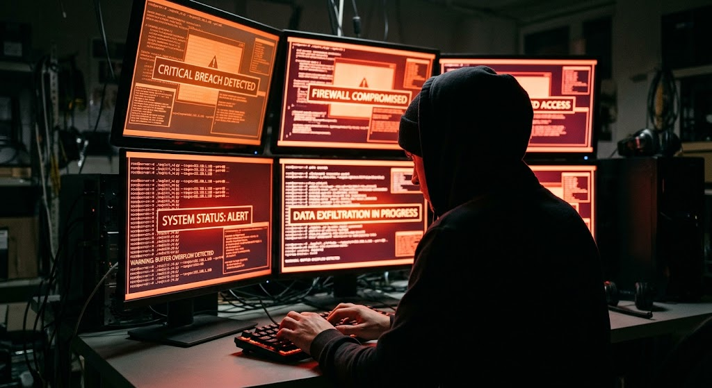

Smart Systems, Smart ChoicesTechnology, Ethics, and SecuritySadie BawduniakOctober 24, 2026Malware and Cyber ThreatsThe Stuxnet: The Turn of Modern WarfareOne very famous hacking incident was discovered in June of 2010, it is the Stuxnet. The Stuxnet is a computer worm designed to attack industrial control systems, specifically the centrifuges used in Iran’s nuclear enrichment facilities. It physically alters the speed of machinery while tricking monitoring screens into showing normal operations. This causes physical damage to equipment without the knowledge of the technicians. The attack destroyed about 1,000 centrifuges and caused significant delays to Iran’s nuclear program. It is considered the world’s first major piece of digital weaponry and marked a major turning point in modern warfare. Types of Malware
Common Hacker Motives
Prevention Strategies
 |